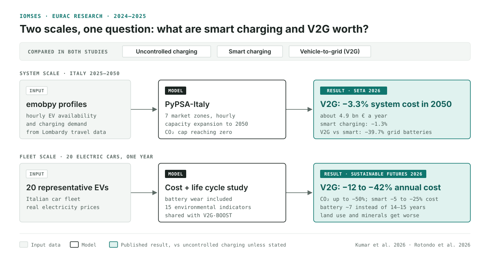

Project results · IOMSES, 2024–2025
Is vehicle-to-grid worth it? Results of the IOMSES project on electric vehicles and Italy's power grid
Italy will need millions of electric vehicles to decarbonise transport. In the IOMSES project we asked two questions: what does it cost the power system to charge them, and is it worth letting their batteries send power back to the grid? We looked at it from two scales, a small group of vehicles and the whole Italian power system, and we counted both money and environmental impacts.

What is IOMSES?
IOMSES stands for Integrated Optimization and Management of Sustainable Mobility and Energy Systems. It ran at the Institute for Renewable Energy of Eurac Research from November 2024 to June 2025, and I was its project manager. The goal was to build modelling tools to assess and optimise large-scale integration of electric vehicles with Italy's power system.
We combined two open-source tools. PyPSA models the power system: generation, storage and the transmission grid between Italy's market zones, hour by hour. emobpy generates realistic hourly profiles of when vehicles drive, park and can charge. Together they give a multi-node model of Italy in which electric vehicles are part of the grid rather than a fixed extra demand.
The project set out to evaluate:
- the impact of transport electrification on power grids;
- the optimisation of smart charging and vehicle-to-grid (V2G);
- economic and environmental benefits across different scenarios;
- possible remuneration mechanisms for V2G participants.
Smart charging and V2G in one sentence each
Smart charging shifts when a car charges, towards hours with cheap electricity or surplus solar and wind, while making sure it still has the charge its driver needs. Vehicle-to-grid goes one step further and lets the parked car send electricity back to the grid when demand peaks, which requires a bidirectional charger. Both are compared with uncontrolled charging, where the car charges as soon as it is plugged in.
Result 1: what V2G saves for a group of vehicles
The first study, published in Sustainable Futures and shared with the V2G-BOOST project, looks at V2G from an economic and environmental perspective. It simulates one year of 20 electric cars representative of the Italian fleet, with real electricity prices, and counts battery wear and its environmental impact over the whole life cycle.
| Compared with uncontrolled charging | Smart charging | V2G |
|---|---|---|
| Average battery life | about 14–15 years | about 7 years |
| Total annual costs | −5% to −25% | −12% to −42% |
| CO2 emissions | −15% to −35% | up to −50% |
V2G pays off even with a battery that lasts half as long. The trade-off shows up in the other environmental indicators: of the 15 analysed, not all improve. With V2G, land use gets worse because cars charge in the hours of peak solar production, and so does the use of mineral resources, because batteries are replaced more often. Whether V2G is the greener choice depends on which impacts matter most.
Result 2: what V2G saves for Italy's power system
The second study scales up to the whole country. With the PyPSA model of Italy's seven market zones, we optimised the power system from 2025 to a net-zero target in 2050, with 30% of electric cars using smart charging or V2G.
- Smart charging lowers the total annual system cost in 2050 by 1.3% compared with uncontrolled charging. V2G lowers it by 3.3%, about 4.9 billion euros a year, even after paying for bidirectional chargers.
- V2G reduces the stationary battery capacity Italy needs in 2050 by 39.7% compared with smart charging alone.
- Modelling when cars are actually plugged in, hour by hour, changes battery investments by tens of gigawatts compared with assuming a constant share of connected vehicles.
The full story, including where in Italy the flexibility is used and what changes when V2G is not free, is in our article on smart charging and vehicle-to-grid in Italy.
What the two studies say together
Both scales point the same way on money and climate. Smart charging is a low-cost step that already brings savings, and V2G adds more, both for the owners of a small fleet and for the national power system. The environmental assessment adds a caveat that a cost-only model would miss: V2G shifts part of the burden from CO2 to land and mineral resources.
IOMSES ran in parallel with V2G-BOOST, which took the same question down to the charger and the territory in South Tyrol. Read about its results in bidirectional charging in practice: the V2G-BOOST project.
Frequently asked questions
Is vehicle-to-grid worth it?
In the IOMSES studies, yes, in economic and climate terms. For a group of 20 simulated electric vehicles, V2G cut annual costs by 12 to 42% and CO2 emissions by up to 50%. At national scale it lowered the cost of Italy's net-zero power system in 2050 by 3.3% compared with uncontrolled charging. The trade-off is higher land use and mineral resource depletion.
What was the IOMSES project?
IOMSES (Integrated Optimization and Management of Sustainable Mobility and Energy Systems) was a research project at Eurac Research, running from November 2024 to June 2025. It built a multi-node model of Italy's energy system with PyPSA and emobpy to study how large numbers of electric vehicles can be integrated into the power grid.
Does V2G have environmental downsides?
Yes. V2G lowers CO2 emissions, but the battery lasts about 7 years instead of 14 to 15, and of 15 environmental indicators, land use and mineral resource use get worse. Its benefits depend on which environmental impacts are prioritised.